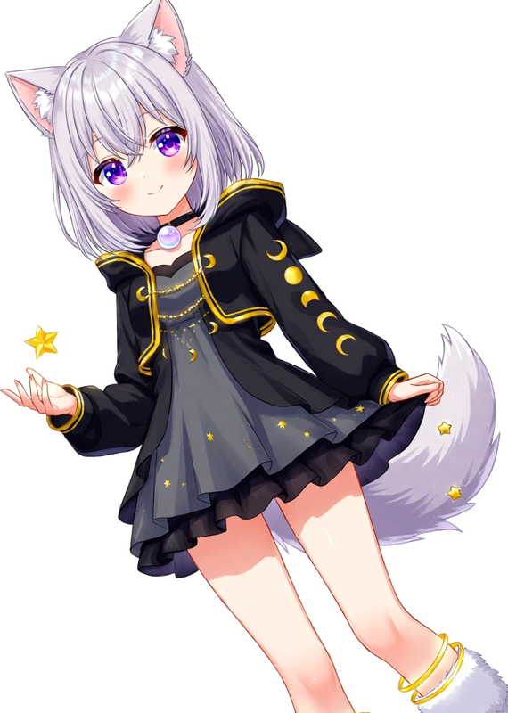

← 水晶ゆめのサイトにもどる
AIM PRACTICE · MAYBE
エイムが上手くなる…かもしれない、夜空の練習場。1回30秒。外しても、星はまた灯ります。

ランキングを読みこんでいます。
遊んだ日ごとのベストが、ここに線で並びます。
外しながら速く撃つより、当てながら少しずつ速くするほうが身につきやすいと言われています。
長くやるより、ゲームの前に2〜3回。手が温まったら、それでおしまいにしても大丈夫。
本番で使うマウスやパッドの感度に近づけて練習すると、手の感覚がそのまま持っていけます。